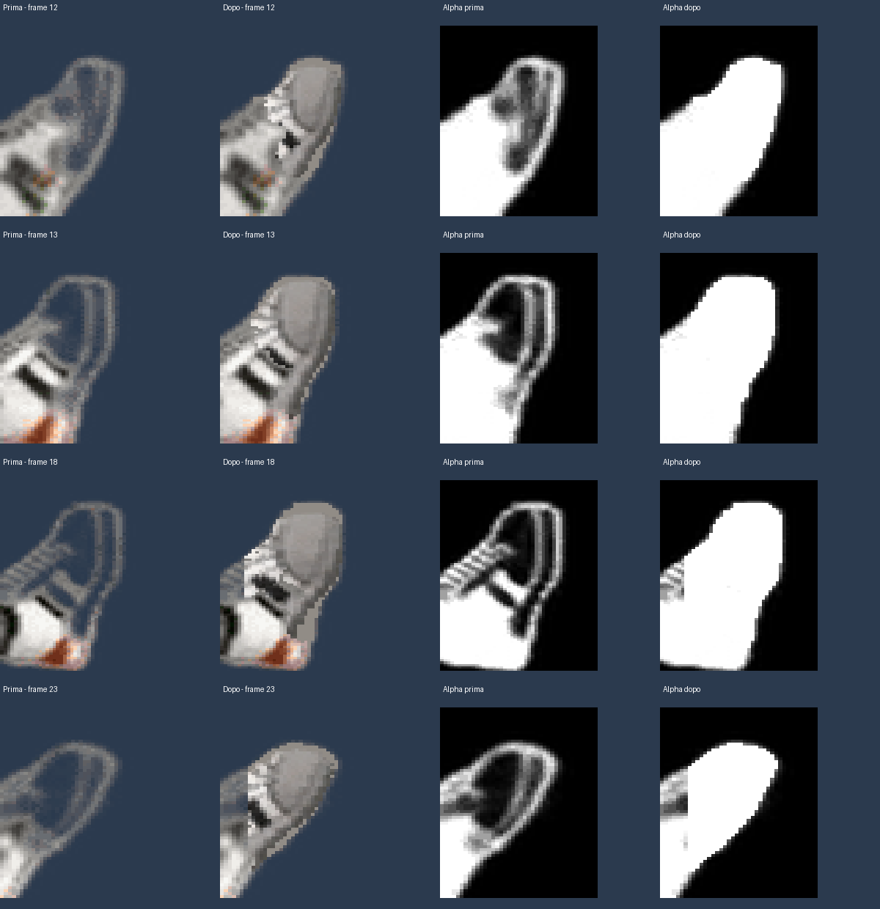

Trasparenza della punta della scarpa corretta nei frame 12–24 (numerazione da 1). Ricostruiti 11.772 pixel in 13 fotogrammi, con opacità finale 255. I colori danneggiati dal ritaglio dello sfondo sono stati ricostruiti da un riferimento ImageGen e applicati soltanto dentro maschere locali allineate alla scarpa.
Verifica: zero differenze fuori dalle maschere; tutti gli altri 22 fotogrammi identici. Contorno esterno, piede arretrato, effetti, scala, padding, ordine e timing conservati. Impatto 0,50 s, ciclo 0,80 s. Metadata e hash aggiornati nel manifest e nell’atlas; gli hash d’importazione sono conservati.
Verifica pixel e hash · Prompt ImageGen · Report timing
